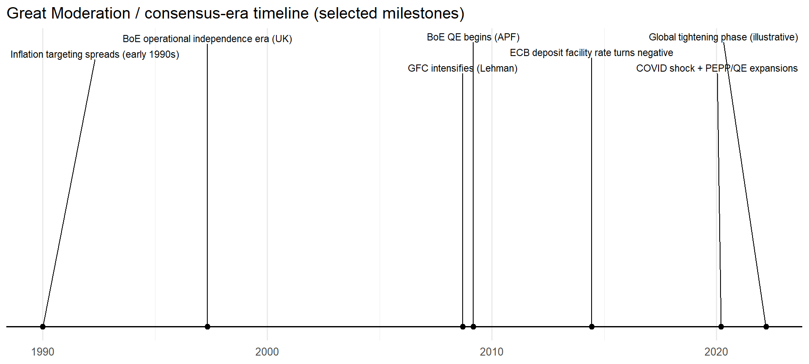
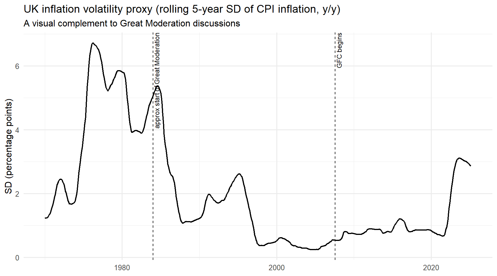
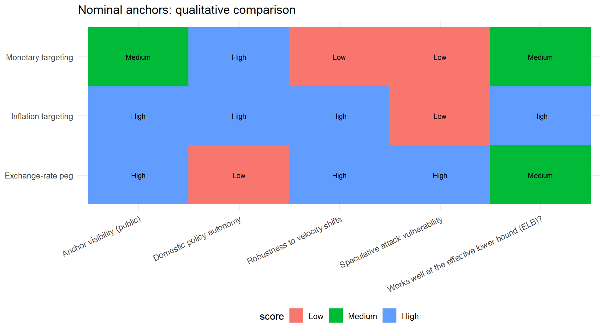
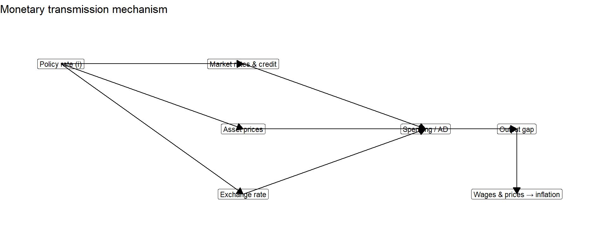
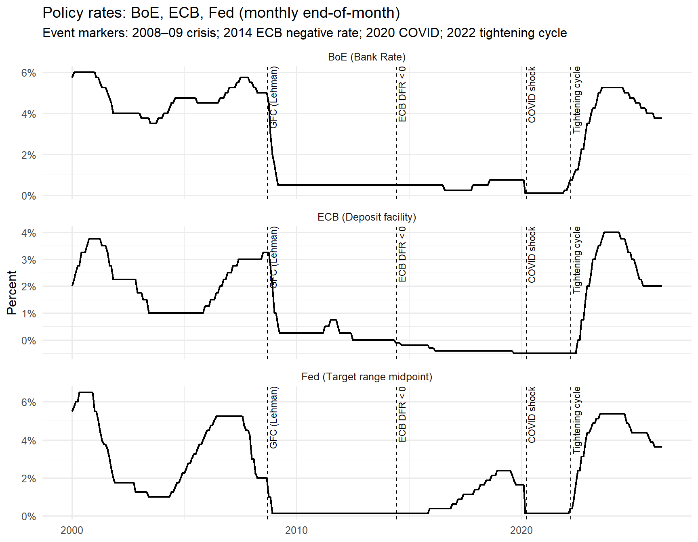
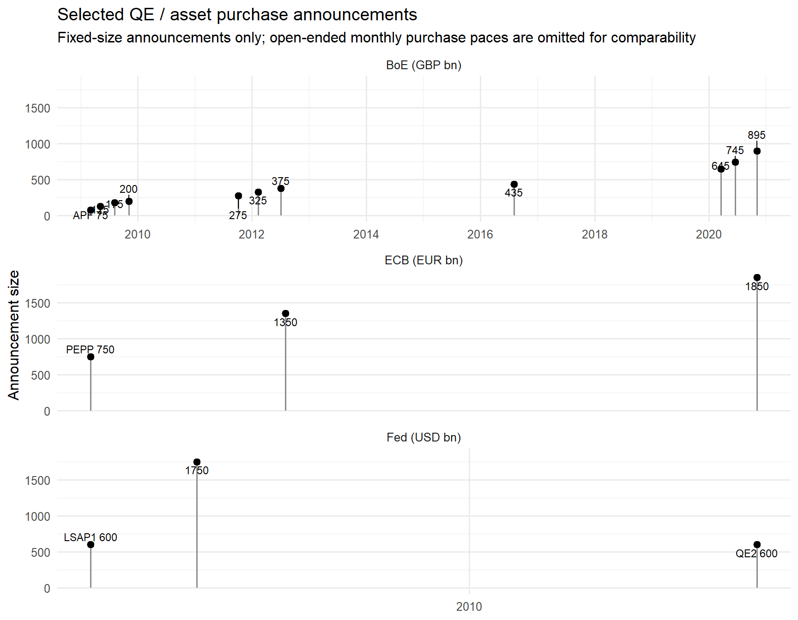
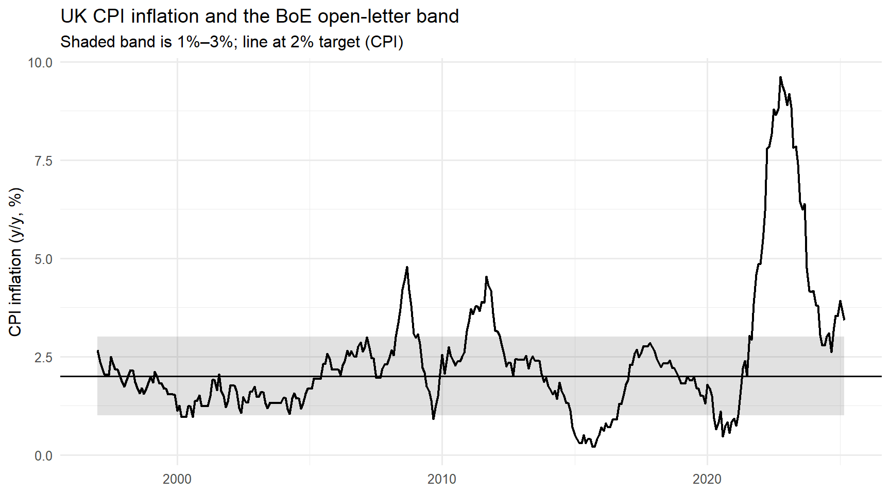
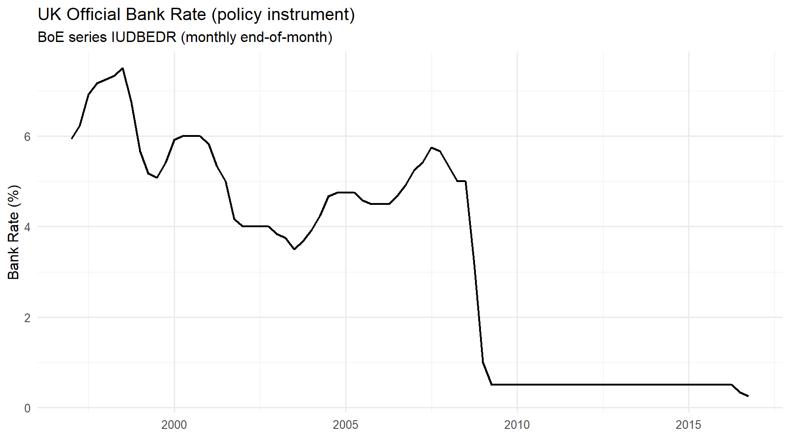

The Monetary Policy Consensus
1 Chapter overview and historical context
By the early 1990s, a widely taught “monetary policy consensus” emerged in advanced economies: monetary policy should prioritize price stability, implemented by an independent central bank using a short‑term policy interest rate, with communication and accountability designed to anchor inflation expectations and reduce macroeconomic volatility. This view became closely associated with the “Great Moderation,” the period of reduced volatility in output growth and inflation in many advanced economies from the mid‑1980s until the global financial crisis (Bernanke, 2004).
In the UK, the political narrative of “stability” became highly salient. A famous statement often associated with this period is Gordon Brown’s “no return to boom and bust,” recorded in a 2006 Budget statement.
The consensus did not imply that recessions were impossible. Many emerging and developing economies continued to experience episodes of currency and financial crisis during the 1990s (for example, crises associated with fixed or heavily managed exchange rates). An IMF analysis by Stanley Fischer—reflecting on crises in Asia, Russia and elsewhere—explicitly highlighted the vulnerability of “more or less fixed” exchange-rate systems to crisis pressure.
This chapter develops the monetary policy consensus framework (see for example Lewis & Mizen, 2000,Ch 16).

1.1 Learning goals
After studying this chapter, you should be able to:
- Explain the core propositions of the monetary policy consensus (long‑run nominal anchor, short‑run real effects via frictions/surprises, credibility problems).
- Compare three anti‑inflation strategies: monetary targeting, fixed exchange rates, and inflation targeting—and explain why inflation targeting became dominant.
- Describe how the UK inflation‑targeting system works (objective setting, operational independence, transparency, and the open‑letter accountability mechanism).
- Evaluate the choice of inflation target (including why “0%” is risky) and explain the difference between inflation targeting and price‑level targeting.
2 What economists mean by the monetary policy consensus
The consensus can be framed as a set of propositions that—by the 1990s and early 2000s—were accepted (with caveats) by many economists across the former Keynesian‑monetarist divide. Modern New Keynesian summaries of “best‑practice” monetary policy similarly stress systematic interest‑rate policy, credibility/commitment, and an inflation objective as the nominal anchor.
2.1 Long-run: monetary policy anchors inflation
A central pillar of the consensus is a long‑run monetarist proposition: persistent inflation is ultimately a monetary phenomenon, in the practical sense that a central bank that sets the nominal anchor can, over time, determine the long‑run inflation rate.
Modern central banks state this in policy‑framework documents. For example, the Federal Reserve’s strategy statement explicitly notes that “the inflation rate over the longer run is primarily determined by monetary policy,” and therefore the committee can specify a longer‑run inflation goal (Governors of the Federal Reserve System, 2025).
Readers can interpret this as: in the long run, monetary policy cannot permanently raise real GDP growth, but it can deliver low and stable inflation, which improves decision-making and long-horizon planning.
2.2 Short-run: monetary policy can affect real activity, but only under specific conditions
The consensus emphasizes two situations where money can affect real variables in the short run:
Unexpected policy innovations (surprises). In the rational expectations tradition, real effects come from the unexpected component of policy—not the predictable component. Robert Lucas’s classic analysis derives a Phillips‑curve‑like relation while excluding “money illusion,” implying that systematic, anticipated policy does not reliably buy higher output; only surprise elements can. Unexpected policy innovations (surprises). In the rational expectations tradition, real effects come from the unexpected component of policy—not the predictable component. Robert Lucas’s classic analysis derives a Phillips‑curve‑like relation while excluding “money illusion,” implying that systematic, anticipated policy does not reliably buy higher output; only surprise elements can. Expected policy changes are priced in ahead of time, so only unexpected changes can temporarily affect output
Nominal rigidities. Even without deliberate deception, if wages and prices adjust slowly, changes in interest rates can influence real spending and production before prices fully adjust. Modern central bank explanations of transmission explicitly highlight nominal rigidities as a reason policy affects real activity. More plainly, wages and prices are “sticky,” which is why interest-rate changes can affect spending and production in the short run.
The consensus interpretation is careful: short‑run real effects are temporary, while the lasting effect of sustained monetary expansion is on nominal variables (especially the price level). In lecture terms: “real effects wear off; nominal effects persist.” This is a key point: the consensus does not claim that monetary policy cannot affect real activity at all; it claims that real effects are conditional on surprises and frictions, and that in the long run, the main effect is on inflation.
2.3 A built-in tension: short-run stabilization versus long-run credibility
The consensus stresses that these short‑run effects create a conflict:
- Short run: policymakers may be tempted to create a boom via surprise inflation (e.g., before an election).
- Long run: the optimal role of monetary policy is to deliver low and predictable inflation.
Time inconsistency theory formalizes this temptation: discretionary “fine tuning” in pursuit of short‑run output gains can damage credibility, raising expected inflation and leading to worse outcomes.
This is why the consensus places special weight on reputation and credibility. A central bank known to be “soft” on inflation may find disinflation costly because private agents doubt the commitment; expectations adjust slowly and output losses can be larger. This logic is consistent with standard credibility models and with central banks’ ongoing emphasis on anchoring long‑term expectations.
3 Implications for how monetary policy should be conducted
The consensus identifies four key implications. Each remains visible in contemporary institutional design.
3.1 Price stability as the central bank’s primary macroeconomic contribution
The consensus view is that monetary policy’s comparative advantage is maintaining a stable nominal environment. Modern policy frameworks make this explicit. The ECB strategy statement says price stability is best maintained by aiming for 2% inflation over the medium term, and emphasizes the importance of the inflation target as an anchor for expectations.
3.2 Independence from day-to-day politics
A central bank insulated from short-term political pressures is less likely to exploit short-run inflation-output trade-offs, and more likely to maintain credibility. In the UK, operational independence was introduced in 1997: the central bank was granted responsibility for setting the short-term policy interest rate to achieve an inflation target set by government (i.e., instrument independence).
The distinction remains crucial:
- Operational (instrument) independence: the central bank chooses how to achieve the target.
- Goal independence: the central bank also chooses the target (rare in practice).
UK policy continues to operate under operational independence: the inflation target is set by government and reaffirmed in remits, while the central bank chooses instruments to achieve it.
3.3 Conservative central bank leadership
The consensus states that monetary conservatives should run central banks. In academic monetary theory, this idea is formalized as “conservative delegation”: appointing a central banker who places relatively high weight on inflation stabilization can reduce inflation bias, though it may raise stabilization costs under some shocks.
3.4 Transparency and accountability when deviating from a low-inflation strategy
The consensus approach is not “no flexibility”; it is disciplined flexibility. When policy deviates from the target path, policymakers should explain why and how inflation will return to target. Modern inflation targeting frameworks embed this in:
- Regular forecasts and reports
- Published minutes and votes
- Explicit accountability triggers
The UK open-letter mechanism is a concrete example: if inflation deviates from target by more than 1 percentage point (above 3% or below 1% on a 2% target), the Governor must write publicly to the Chancellor explaining the deviation and the strategy to return inflation to target.
4 Strategies for achieving low inflation: targets and nominal anchors
Inflation control can be organized into three practical strategies: monetary targeting, fixed exchange rates, and inflation targeting. A useful way to frame the differences is: all three strategies try to solve a credibility problem by providing the public with a nominal anchor—a variable that helps pin down expectations about future inflation.

4.1 Monetary targeting
Monetary targeting uses a target path for a money aggregate (e.g., M1, M2, broad money) as an intermediate target to achieve low inflation.
4.1.1 The simple theoretical case
Start from a quantity-theory identity: \(MV = PY\). In growth rates, a convenient approximation is: \[\pi \approx \mu + \nu - g,\] where \(\pi\) is inflation, \(\mu\) is money growth, \(\nu\) is velocity growth, and \(g\) is real output growth. If velocity growth is stable (or near zero), targeting money growth consistent with output growth and desired inflation should, “on average,” stabilize inflation.
This is closely aligned with monetarist proposals for steady money growth (for example, a fixed \(k\)-percent rule, where the money supply grows by a constant percentage each year) and with the idea that predictability in monetary conditions can anchor expectations.
4.1.2 Why monetary targeting proved difficult in practice
Two practical problems emerged:
Definitional and controllability problems. It is difficult to choose which monetary aggregate matters most, and central banks have tighter control over narrow aggregates than over broad aggregates created inside the banking system.
Instability of money demand (velocity instability). Even if the central bank can influence money growth, the relation between broad money and nominal income can become unreliable due to financial innovation and portfolio shifts.
A classic Bank of England analysis from the 1980s explicitly discussed how the relationship between broad money growth and nominal incomes became increasingly unpredictable in the UK after 1980, with velocity behavior changing substantially, raising the question of whether broad money targets should be abandoned.
This diagnosis appears in later central bank research as well: when the money–inflation relationship is unstable, hitting a money target may not reliably deliver the inflation outcome, weakening accountability and the anchor.
4.2 Fixing the exchange rate
A fixed (or tightly managed) exchange rate can serve as a nominal anchor by “importing” the credibility of a low‑inflation anchor country.
4.2.1 The simple link between exchange rates and inflation
A stylized purchasing power parity relation suggests: \[\Delta e \approx \pi - \pi^*,\] where \(e\) is the nominal exchange rate (domestic currency per unit of foreign currency), and \(\pi^*\) is foreign inflation. If the exchange rate is fixed (\(\Delta e = 0\)), then domestic inflation tends to converge toward foreign inflation (\(\pi \approx \pi^*\)) in the long run.
This is an intuition, not a law: PPP is imprecise in the short run. But the key policy lesson is about constraints: a credible commitment to a peg can severely limit domestic monetary discretion.
4.2.2 Advantages (when credible)
The classic case for exchange-rate pegs stresses two potential benefits (Barro and Gordon, 1983; Calvo, Kumhof and Celasun, 2002):
- A clear and observable nominal anchor that can help bring inflation down more quickly when domestic prices are inertial.
- A rule-like commitment device that can strengthen credibility by limiting discretionary policy.
4.2.3 Disadvantages and fragility (when credibility is imperfect)
The main costs include:
- Loss of domestic policy autonomy. If the anchor country’s interest rate is inappropriate for domestic conditions, the pegging country cannot respond.
- Balance of payments stress and reserve loss. Defending an overvalued peg depletes reserves; defending an undervalued peg can force persistent reserve accumulation and balance-sheet expansion.
- Speculative attack risk. If markets believe a peg is inconsistent with fundamentals, rational speculation can become self-fulfilling: agents buy foreign currency before devaluation, accelerating reserve loss and precipitating collapse.
The UK’s 1992 Exchange Rate Mechanism (ERM) episode illustrates the internal-objective vs exchange-rate-commitment conflict: the ERM was a European system in which participating currencies were expected to remain within agreed bands against one another. The Bank of England’s analysis describes how ERM membership constrained UK interest rate policy relative to Germany, raising real interest rates as domestic inflation pressures fell, and culminating in suspension of sterling’s ERM membership after heavy intervention.
A second canonical example is Argentina’s collapse of the convertibility regime. The IMF Independent Evaluation Office report describes a cumulative policy problem. First, once confidence weakened, investors and depositors increasingly doubted that the peso could remain fixed to the dollar. Second, this loss of confidence led to capital outflows, pressure on reserves, and severe strain on the banking system. Third, defending the peg required extremely tight policies at a time when the domestic economy was already weak, which made the recession deeper and support for the regime weaker. In the end, the government could no longer maintain debt payments and the exchange-rate commitment at the same time, so Argentina defaulted and abandoned the peg.
A contrasting case is a “harder” rules-based currency board. Under Hong Kong’s linked exchange rate system, the Hong Kong dollar is tied to the US dollar and the monetary authority commits to defend that link within a narrow range. The important point is that this is not just a general promise to keep the exchange rate stable: it is backed by a more automatic rule-based system and by large foreign-exchange reserves. When pressure builds, interest rates in Hong Kong may have to adjust sharply to keep the peg credible, even if those movements are uncomfortable for the domestic economy. This illustrates both the strength and the cost of a hard peg: credibility can be stronger because the rule is clearer, but domestic monetary policy autonomy is correspondingly weaker. Taken together, these examples show why interest rates often have to adjust under a peg. If investors begin to doubt that the exchange rate will hold, the authorities may need higher interest rates to reduce capital outflows and support the currency. Argentina shows how this can become unsustainable in a weak economy, while Hong Kong shows that a harder and more credible system can survive, but only by accepting much less freedom over domestic monetary policy.
4.3 Inflation targeting
Inflation targeting became the dominant consensus strategy in many economies because it combines:
- A clear nominal anchor (the inflation target)
- Domestic policy autonomy (unlike a peg)
- Robustness to money-demand/velocity shocks (unlike strict monetary targeting)
- Institutional reforms (communication and accountability) to cope with time inconsistency
4.3.1 What inflation targeting is
A widely used definition is that a central bank publicly announces a numerical inflation objective (often with a tolerance band) and commits institutionally to achieve it over a medium-term horizon, using all available information.
In the academic literature, Ben Bernanke and Frederic Mishkin argued that inflation targeting is best understood as “constrained discretion”: not a mechanical rule, but a framework that disciplines decisions through transparency, forecasts, and accountability.
In practice, most regimes are flexible inflation-targeting regimes: they aim to stabilize inflation around target while also smoothing output and employment fluctuations.
4.3.2 Why a tolerance band exists
A central bank does not control inflation directly; it affects inflation with lags through aggregate demand, expectations, and exchange rates. For credibility, regimes typically define a band (or operate with an implicit tolerance) so that small forecast errors or supply shocks do not automatically appear as “policy failure.”
4.3.3 The policy instrument: the short-term interest rate
Inflation targeting is implemented primarily through a short‑term policy rate (with money aggregates adjusting endogenously).
The Bank of England’s transmission-mechanism paper describes how the MPC sets the official short-term rate, which influences market rates, expectations, asset prices and the exchange rate, and then spending decisions, ultimately affecting inflation. More recent BoE work—explicitly linking nominal rigidities and expectations to transmission—reinforces the same core mechanism. The ECB’s transmission overview similarly highlights expectations, asset prices, exchange rates, and spending decisions as key channels.

4.3.4 Inflation targeting after the Global Financial Crisis: the toolkit expands
The global financial crisis did not remove inflation targeting from the consensus; it expanded the toolkit when interest rates hit the effective lower bound. Concrete institutional examples:
- The Bank of England explains that QE was introduced in March 2009 when Bank Rate was very low; QE lowers longer-term yields by purchasing bonds, supporting spending and helping meet the inflation target.
- The Federal Reserve documents large-scale asset purchases beginning in 2008–09 (LSAP1), illustrating how balance-sheet tools were used when conventional rate cuts were constrained.
- The Bank of Japan’s official reference timeline lists ZIRP (1999), QE (2001), QQE (2013), and later negative rates and yield curve control—illustrating sustained reliance on unconventional tools in a low-inflation environment.


5 Inflation targeting in the UK: institutions, communication, and practice
5.1 The UK framework: operational independence with a government-set target
The UK has operated modern inflation targeting since the early 1990s, with a major institutional change in 1997: operational independence for setting the policy rate to achieve the target. The Bank of England’s retrospective discussion of independence describes the 1997 arrangement and the construction of the MPC (monthly meetings, voting, published minutes).
Today, the inflation target is set by government, reaffirmed in the remit, and measured by CPI inflation. The 2025 remit letter explicitly reconfirms the 2% CPI target and the primacy of price stability, and describes the Bank’s statutory objectives (price stability, and subject to that, supporting government economic policy).
5.2 Accountability: open letters
If inflation deviates beyond the tolerance threshold, the Bank must provide an explanation in writing.
This mechanism is described clearly in HM Treasury’s “open letters” collection and the BoE’s public explanation of the 2% target: if CPI inflation is above 3% or below 1%, the Governor writes an open letter to the Chancellor explaining why inflation moved away from target and how policy will return it to target.


5.3 Transparency: reports and forecasts
The Bank publishes regular Monetary Policy Reports as a major communication tool (renamed from “Inflation Report” in 2019 as part of changes designed to improve communication and accountability).
This evolution is consistent with the consensus idea that credibility is supported by regular, structured communication of:
- current conditions,
- forecasts (conditional on a policy path),
- and the reaction function guiding decisions.
5.4 Flexible inflation targeting in practice
The Bank does not aim to hit the target every month; it aims to return inflation to target over a horizon, justifying temporary deviations.
This “flexible” interpretation is also embedded in broader inflation targeting practice: supply shocks and trade-offs are handled by allowing inflation to return to target over a medium-term horizon, rather than forcing immediate reversal that would generate unnecessary output volatility.
5.5 Forward guidance: the UK 2013 example
Since the crisis, communication expanded to include forward guidance.
The August 2013 MPC minutes provide an official statement of the UK’s first explicit threshold-based forward guidance under Mark Carney: the MPC intended not to raise Bank Rate from 0.5% at least until the unemployment rate fell to 7%, subject to explicit “knockout” conditions related to the inflation outlook, inflation expectations anchoring, and financial stability.
This example illustrates two key consensus ideas simultaneously:
- Expectations are part of the transmission mechanism.
- Credibility requires conditional commitments that are clearly explained and constrained.
6 Choosing the inflation target: what “price stability” means in practice
6.1 Friedman’s optimal quantity of money and the Friedman rule
A standard presentation of the Friedman rule distinguishes between:
- the k-percent money growth rule (a policy rule for money growth), and
- the optimal quantity of money argument (a normative argument about the optimal nominal interest rate).
Because the marginal resource cost of producing base money is close to zero, the socially optimal policy makes it costless at the margin to hold money—implying a nominal interest rate near zero (\(i \approx 0\)). Using the Fisher relation \(i \approx r + \pi^e\), achieving \(i=0\) in steady state implies \(\pi \approx -r\) (a steady deflation roughly equal to the real interest rate).
This is a powerful theoretical benchmark—but it is not a practical policy recommendation in modern regimes.
6.2 Why target inflation above zero: deflation risk, policy space, and wage adjustment
Three reasons support inflation targeting above zero:
Deflation and debt burdens. Low or negative inflation can raise real debt burdens and amplify recessions through financial stress. Bernanke’s analysis highlights how deflation can create serious problems at the zero bound and references the debt‑deflation logic associated with Irving Fisher.
Policy space at the effective lower bound. If inflation is too low, then nominal interest rates are lower on average, leaving less room to cut rates in downturns. Once the nominal policy rate is at (or near) zero, conventional easing is constrained, complicating stabilization.
Modern frameworks explicitly acknowledge this constraint. For example, the FOMC’s 2020 statement notes that the long-run neutral rate has declined, increasing the frequency of effective‑lower‑bound episodes; it therefore adopted a strategy of aiming for inflation averaging 2% over time (seeking periods moderately above 2% following persistent undershoots) to help prevent expectations drifting downward.Indirect real wage adjustment with nominal rigidities. With sticky nominal wages, positive inflation can facilitate real wage declines when needed, potentially speeding reallocation and recovery. Modern BoE analysis emphasizes nominal rigidities as central to why monetary policy transmits to real activity and inflation.
6.3 Negative nominal rates: what happened in practice
Some central bankers viewed negative nominal rates as infeasible, yet the ECB and others implemented them.
An ECB press release documents the introduction of a negative deposit facility rate (−0.10%) effective June 2014. A BIS survey article finds that modestly negative policy rates transmitted through money markets and other rates largely similarly to positive rates, though retail deposit rates were more insulated.
Together, these episodes refine the lecture point: negative rates are possible but operationally and politically constrained, strengthening the case for a small positive inflation target to reduce how often policy must rely on the most unconventional measures.
6.4 Target inflation rates or the price level
The difference can be illustrated with a simple example:
- If inflation is 3% one year and the objective is to keep average CPI growth at 2%, then next year inflation should be below 2% (e.g., around 1%) to bring the price level back toward the intended path.
- Under standard inflation targeting, “bygones are bygones”: the central bank aims to return inflation to 2% going forward, allowing the price level to drift upward permanently after an overshoot.
This is the inflation‑target vs price‑level‑target contrast:
- Price-level targeting: commits to a path for \(P_t\) (no “base drift”).
- Inflation targeting: commits to a path for \(\pi_t\) (allowing base drift).
In the research literature, Svensson’s analysis compares these regimes and shows that, under certain conditions, price-level targeting can reduce long-run price uncertainty and may improve outcomes under discretion.
Modern frameworks have experimented with “makeup” features that partially mimic price-level targeting without committing fully to a price-level path—for example, the Fed’s “average inflation” language adopted in 2020.
7 Problem questions
Explain the three key assumptions underlying the monetary policy consensus about monetary transmission: (i) long-run neutrality, (ii) short-run real effects through surprises or rigidities, and (iii) the time inconsistency problem. Which is most important for justifying central bank independence?
Compare monetary targeting and inflation targeting as nominal anchors. Why did most central banks abandon monetary targeting by the 2000s? (Consider both theoretical and practical arguments.)
Describe the UK’s inflation targeting system: who sets the target, who sets the instruments, what is the accountability mechanism, and how does forward guidance fit in?
Use the logic of purchasing power parity to explain why a peg to a low-inflation country can serve as an anchor. Then explain why pegs are fragile under open capital markets (consider speculative attacks and reserve loss).
“If the Friedman rule implies optimal steady-state inflation should be around −2% to −3%, why don’t central banks target that?” Discuss at least two concerns about very low or negative inflation targets in practice.
7.1 References
Barro, R.J. and Gordon, D.B. (1983) “Rules, discretion and reputation in a model of monetary policy,” Journal of Monetary Economics, 12(1), pp. 101–121.
Bernanke, B.S. (2004) “The great moderation.” Federal Reserve speech.
Calvo, G.A., Kumhof, M. and Celasun, O. (2002) Nominal exchange rate anchoring under inflation inertia. IMF Working Paper WP/02/170. International Monetary Fund. Available at: https://www.imf.org/en/Publications/WP/Issues/2016/12/30/Nominal-Exchange-Rate-Anchoring-Under-Inflation-Inertia-15931.
Governors of the Federal Reserve System, B. of (2025) “Statement on longer-run goals and monetary policy strategy.” FOMC statement. Available at: https://www.federalreserve.gov/monetarypolicy/review-of-monetary-policy-strategy-tools-and-communications.htm.